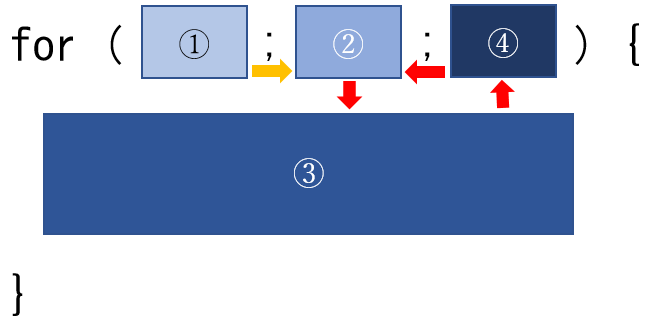

第1.5回の目標：繰り返し処理(for文)ついての理解を深める。
繰り返し処理の前に、変数への値の代入について復習する。
数学において=は等しいことを表す記号であるが、プログラミングでは=は代入を意味する。
数学の意味では、〇=□と□=〇に大した違いはない。
一方、プログラミングでは〇=□と□=〇は明確に意味が違う。処理の順序としては、=の右側が計算され、その結果が=の左側の変数へ代入される。
例
x = x + 2;
上の例は正しい文法で書かれている。
この処理が行われる前のxの値が10であったとし、その後この命令が実行されるとしよう。まず=の右側のx + 2が計算される。12である。この12が=の左側のxへ代入される。結果としてこの命令が実行されると、xの値が2大きくなり、12になる。
例
x + 2 = x;
上の例は正しくない。=の右側が計算され、その値を=の左側へ代入しようとしても、x + 2には値を代入できないからである。
例題1 変数yの値を2倍にする処理を書け。(yは宣言されていて、既に何かの値が代入されているとする)
1.の補足で触れたように、=は変数への値の代入の命令である。
if文などでの条件として、値が等しいという関係を表す際には==を用いる。
if (x == 10) {
// xの値が10に等しいときに、この部分の処理が行われる。
} else {
// xの値が10に等しくないときに、この部分の処理が行われる。
}
なお、//をコメントアウトという。この行の//以降はjavascriptが解釈する命令として無視される。つまり、ソースコードを読む人間向けにコメントを書く際に用いるものである。
また、複数行にまたがってコメントアウトしたい場合は/*と*/で挟む。
例題1-2 変数yの値が10に等しいときはyの値を10倍し、そうでなければyの値に2を加える処理を書け。(yは宣言されていて、既に何かの値が代入されているとする)
まずfor文の構造の復習である。
①は繰り返しが始まって最初に1度だけ行われる。通常はループカウンタやインデックスと呼ばれる変数を初期化する。つまりi=0する。
②、③、④は繰り返し行われる可能性があり、実行される順番は②、③、④、②、③、④、・・・である。
②は繰り返しが続行されるための条件、例えば i < 10 のような式である。②の式が正しい間繰り返しが続行される。
③はこのfor文で繰り返したい主な処理である。
④はループカウンタやインデックスと呼ばれる変数を増やしたり、減らしたりする、i++のような処理である。
さて、例えば0から10までの数を足したいと思ったとしよう。
sum = 0 + 1 + 2 + 3 + 4 + 5 + 6 + 7 + 8 + 9 + 10;
上のように書くことができる。決まった数まで足すのであれば上と同じように書けるが、いくつまで足すのか事前に分からないとき(ユーザ操作で決まるときなど)はどうすればよいのだろうか。
繰り返し文で書くと上手くいくことがある。
上の足し算を分解すると、次のように書ける。
sum = sum + 0; sum = sum + 1; sum = sum + 2; sum = sum + 3; sum = sum + 4; sum = sum + 5; sum = sum + 6; sum = sum + 7; sum = sum + 8; sum = sum + 9; sum = sum + 10;
同じ形の式が繰り返されているところがポイントである。ただし、sumと足されている値は1ずつ大きくなっている。これをfor文で書くと
for (i = 0; i <= 10; i++) {
sum = sum + i;
}
である。一つ前の例では沢山あった sum = sum + □ が1行だけになっていることが分かる。また、いくつまで足すのかを柔軟に変更できるようになったのにも注意しよう。
例題2 for文を使って、変数sumに0から20までの数を足せ。
例題3 for文を使って、変数sumに20から30までの数を足せ。
for (i = 0; i < 10; i++) {
処理A
}
上の例では処理Aが10回行われる。0から9までに数が10コあるから10回の繰り返しである。for文のこのような書き方を数学の公式のように覚えておくと良い。